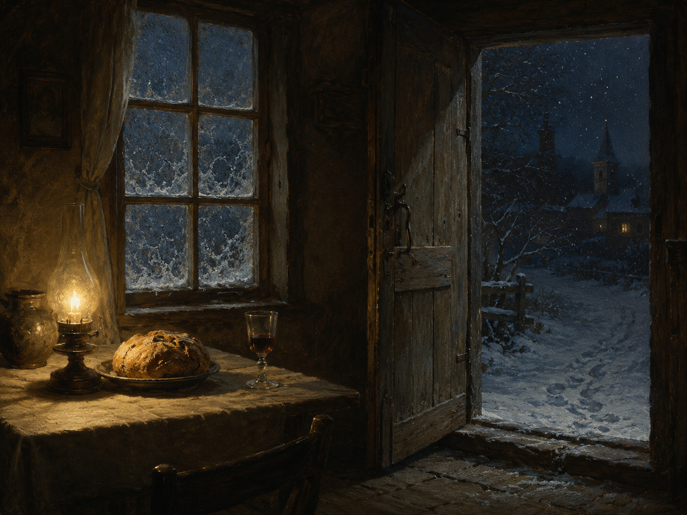

Wenn der Schnee ans Fenster fällt,
全诗以 wenn 引导的时间从句开篇，动词 fällt 后置。ans = an das（第四格，表示雪"落到"窗上的方向）。首行是德语现代诗中最著名的开篇之一，语言极其朴素，几乎全为单音节词。
一个冬夜
《梦中的塞巴斯蒂安》（Sebastian im Traum）·「孤独者的秋天」（Der Herbst des Einsamen）
表现主义早期
1913年作（存两稿），第二稿收入1915年出版的《梦中的塞巴斯蒂安》

图片由 AI 生成
Wenn der Schnee ans Fenster fällt,
全诗以 wenn 引导的时间从句开篇，动词 fällt 后置。ans = an das（第四格，表示雪"落到"窗上的方向）。首行是德语现代诗中最著名的开篇之一，语言极其朴素，几乎全为单音节词。
Lang die Abendglocke läutet,
第二个并列的从句，省略了 wenn（德语中并列从句可省去重复的连词），动词 läutet 同样后置。die Abendglocke 指黄昏的晚祷钟（Angelus）。lang 在此为副词，意为"长久地"。
Vielen ist der Tisch bereitet
主句。Vielen 是 viele 的第三格复数，置于句首作"为许多人"；der Tisch ist bereitet 用状态被动（sein + 第二分词），强调结果状态而非动作。这句在德语中会自然唤起《诗篇》23 篇"你在我敌人面前为我摆设筵席"的回响。
Und das Haus ist wohlbestellt.
wohlbestellt 由 wohl（好好地）+ bestellt（第二分词，来自 bestellen 打理、耕作）构成，意为"井然有序、料理妥当"，常用于田地与家宅。首节四行描绘的是一个封闭、温暖、已然完成的内部世界。
Mancher auf der Wanderschaft
mancher（有些人、不止一个人）为不定代词，单数形式但含复指意味。die Wanderschaft 特指手工业帮工出师后按行会传统进行的漫游（"auf der Walz"），因此这个"漂泊者"并非现代意义的流浪汉，而带有一种被制度化的、有归途的行走。
Kommt ans Tor auf dunklen Pfaden.
das Tor（大门）与首节的 Fenster、Haus 构成"内／外"的空间对立。auf dunklen Pfaden（沿着幽暗的小径）为复数第三格。特拉克尔笔下的颜色词几乎都带象征性，dunkel 在其诗中反复标记着无归属与受难。
Golden blüht der Baum der Gnaden
全诗的转折意象。der Baum der Gnaden（恩典之树）综合了伊甸园的生命树与基督教的十字架传统（十字架在中世纪常被称为"生命之树"）。golden 在特拉克尔诗中是最高级的正面颜色。此句在第一稿中并不存在，是修改时新加入的核心意象——详见校对记录。
Aus der Erde kühlem Saft.
语序需还原：aus [der Erde] [kühlem Saft] = "自大地清凉的汁液中"，der Erde 为前置第二格。恩典之树并非从天而降，而是从大地的汁液中生长出来——这一细节使全诗的宗教意象牢牢扎根在自然之中，也是海德格尔阐释的着力点之一。
Wanderer tritt still herein;
此行有两种读法：(1) Wanderer 为不带冠词的呼语，tritt 为命令式——"漂泊者啊，静静地进来吧"；(2) Wanderer 为主语，tritt 为第三人称现在时——"漂泊者静静地走了进来"。德语在此形态上无法区分，特拉克尔也未加逗号消歧。本站译文取命令式一读，但两种理解都有学术支持。herein 指"从外面进到（说话者所在的）里面"。
Schmerz versteinerte die Schwelle.
全诗最费解也最著名的一行。versteinern 在此为及物用法（使……石化），过去时。die Schwelle（门槛）是内与外的分界。海德格尔在《语言》（1950）一文中对此行有长篇阐释：门槛承载着"之间"，它必须是坚硬的，才能让内与外各自成立，而使它坚硬的正是痛苦。注意：部分流通版本作现在时 versteinert，本站从原刊的过去时，详见校对记录。
Da erglänzt in reiner Helle / Auf dem Tische Brot und Wein.
da 在此为副词"于是、这时"。erglänzen（开始发光）的前缀 er- 表示动作的起始。Tische 带旧式第三格词尾 -e。面包与酒直接指向圣餐（Abendmahl），但特拉克尔全诗未出现任何教会词汇——这是他一贯的手法：让宗教意象在纯粹的日常场景中自行浮现，不加解释，也不作断言。
| Infinitiv | Präsens 3. Sg. |
Präteritum | Perfekt | Partizip II | Konjunktiv II | Hilfsverb |
|---|---|---|---|---|---|---|
| fallen | fällt | fiel | ist gefallen | gefallen | fiele | sein |
| ↳ 强变化（a–ie–a），现在时单数变元音；诗中作 wenn 从句谓语，后置于行末。 | ||||||
| läuten | läutet | läutete | hat geläutet | geläutet | läutete | haben |
| ↳ 可作不及物（钟自己响）与及物（敲钟）；诗中主语为 die Abendglocke。 | ||||||
| bereiten | bereitet | bereitete | hat bereitet | bereitet | bereitete | haben |
| ↳ 诗中用状态被动 "ist … bereitet"（sein + 第二分词），表示已完成的状态；与过程被动 "wird bereitet"（正在被准备）区分。 | ||||||
| blühen | blüht | blühte | hat geblüht | geblüht | blühte | haben |
| ↳ 诗中主语后置："Golden blüht der Baum der Gnaden"（状语在前，主语在动词后）。 | ||||||
| hereintreten | tritt herein | trat herein | ist hereingetreten | hereingetreten | träte herein | sein |
| ↳ 可分动词，强变化（e–a–e，现在时单数变 i）；诗中命令式 "tritt … herein"（第二人称单数命令式不加 -e）。 | ||||||
| versteinern | versteinert | versteinerte | hat versteinert | versteinert | versteinerte | haben（及物）／sein（不及物） |
| ↳ 诗中为及物用法的过去时 versteinerte；部分流通版本误作现在时 versteinert，详见校对记录。 | ||||||
| erglänzen | erglänzt | erglänzte | ist erglänzt | erglänzt | erglänzte | sein |
| ↳ 诗中现在时，主语 "Brot und Wein" 后置于句末，动词却用单数 erglänzt——两个并列主语被视为一个整体（圣餐），这一处单复数选择值得留意。 | ||||||
Wenn der Schnee ans Fenster fällt, / Lang die Abendglocke läutet,
Vielen ist der Tisch bereitet / Und das Haus ist wohlbestellt.
Aus der Erde kühlem Saft.
Wanderer tritt still herein;
《一个冬夜》作于1913年，收在特拉克尔生前编定、1915年（其去世后）出版的诗集《梦中的塞巴斯蒂安》的「孤独者的秋天」一辑中。全诗三节十二行，四音步扬抑格，语言朴素到近乎童谣，却是德语现代诗中被阐释得最多的作品之一。
这首诗现存两稿，差异集中在第二、三节。第一稿（题为《冬夜》，遗稿中的"双重稿本"之一）后半部分作："Seine Wunde voller Gnaden / Pflegt der Liebe sanfte Kraft. // O! des Menschen bloße Pein. / Der mit Engeln stumm gerungen, / Langt von heiligem Schmerz bezwungen / Still nach Gottes Brot und Wein."（他那充满恩典的伤口／由爱的温柔之力照料。／／哦，人赤裸的痛苦。／那与天使默默角力的人，／被神圣的痛苦所制伏，／静静地伸手去取神的面包与酒。）可以看到，第一稿把宗教含义几乎全部说明白了：伤口、爱、与天使角力（雅各的典故）、"神的"面包与酒。定稿则删去了所有这些解释性成分，代之以"恩典之树"这一意象与门槛石化的一行——宗教内容没有消失，而是被压回到物与动作之中。对照两稿阅读，是理解特拉克尔诗艺的一条捷径。
此诗因海德格尔而进入哲学史。他在1950年的演讲《语言》（Die Sprache，后收入《在通向语言的途中》）中以整篇篇幅解读这十二行，尤其是"Schmerz versteinerte die Schwelle"一句：门槛承载着内与外之"间"，它必须坚硬持久，而使之坚硬的正是痛苦；语言不是人对世界的命名，而是"语言自己说话"，诗把物与世界召唤到场。这一解读影响极大，也引来不少批评——有学者认为海德格尔把特拉克尔的诗当成了自己哲学的例证。无论如何，这首诗与它的哲学接受史，已经成为20世纪德语文学中一个无法绕过的组合。
特拉克尔本人的生平与这首诗的温暖形成尖锐反差：他1914年随奥匈军队参加加利西亚战役，在格罗代克战役后被派去照看约90名重伤员而精神崩溃，同年11月在克拉科夫军医院死于可卡因过量，年仅27岁。
中文译文为本站学习译文（AI 辅助），采用直译。三处需要说明的处理：(1) 第9行 "Wanderer tritt still herein" 在德语中兼具命令式与陈述句两种可能，译文取命令式一读（"漂泊者啊，静静地进来吧"），但请学习者参见"语法要点"了解另一种读法；(2) 第10行 "Schmerz versteinerte die Schwelle" 直译为"痛苦已把门槛化为石头"，保留其及物结构与过去时，不作"门槛因痛苦而僵硬"之类的意译，以免削弱海德格尔阐释所依赖的语法关系；(3) 全诗刻意不出现"圣餐""教堂"等词，中译亦严格保持这一克制。已知此诗存在多个中文译本（如林克、先刚等译者的翻译），因版权原因本站不转载具体译本全文。
德文正文以 textlog.de 明确标注的"第2稿"（即《梦中的塞巴斯蒂安》定稿）为主来源，以 aphorismen.de 为辅助来源逐词核对，三节十二行内容一致。核实到三项需要说明的差异：(1) 稿本差异（作者本人修改）：本诗存两稿，第一稿（textlog.de 题作 Im Winter）第二节后两行作 "Seine Wunde voller Gnaden / Pflegt der Liebe sanfte Kraft."，第三节整体作 "O! des Menschen bloße Pein. / Der mit Engeln stumm gerungen, / Langt von heiligem Schmerz bezwungen / Still nach Gottes Brot und Wein."，与定稿差异极大。本站采定稿，并在文化背景中完整引述第一稿以供对照。(2) 时态：第10行定稿作过去时 "versteinerte"（两来源一致），但网络上大量转载作现在时 "versteinert"；此差异直接影响海德格尔阐释所依据的语法，本站从两来源共同支持的过去时。(3) 标点：第9行 aphorismen.de 加逗号作 "Wanderer, tritt still herein"，textlog.de 不加逗号；逗号的有无决定了该行是否必须读作呼语＋命令式，本站从 textlog.de 的无逗号写法以保留原有歧义，并在注释中说明两种读法。需说明的是，本站未直接查阅1915年 Kurt Wolff 版《梦中的塞巴斯蒂安》影印件或萨尔茨堡历史批评版，上述采择依据数字化转录，属待进一步核实项。